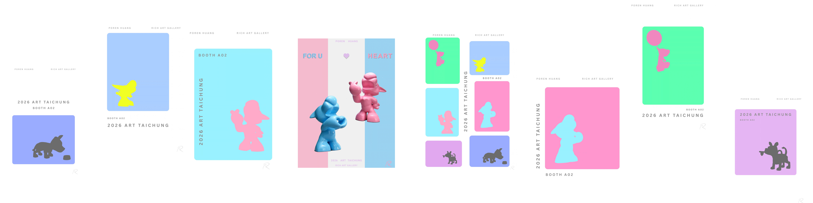

NEWS · 展覽與資訊
Exhibitions & News

ART FAIR
ART TAIPEI 2026
Taipei World Trade Center Exhibition Hall 1
ART FAIR
Art Taichung 2026
Taichung International Convention and Exhibition Center · Rich Art Gallery
ART FAIR
ART TAIPEI 2025
Taipei World Trade Center Exhibition Hall 1
EXHIBITION
DIFC West Wing Gate Building
Dubai
EXHIBITION
Rotterdam Exhibition
Rotterdam, Netherlands
EXHIBITION
La Bella Vita
Continental Development Lige Exhibition
ART FAIR
Night Art Fair Taipei
Taipei
EXHIBITION
Belvedere Art Space Exhibition
Dubai
EXHIBITION
UNMASKED #2
aquabitArt gallery, Berlin
ART FAIR
KunstRAI Amsterdam
Okker Art Gallery, Amsterdam
EXHIBITION
Treasure Garden
Continental Development
EXHIBITION
PAPER REALITY
aquabitArt gallery, Berlin
EXHIBITION
The Dog's Notes
Beirut, Lebanon
EXHIBITION
The Dog's Notes
Novotel Taipei Taoyuan International Airport
EXHIBITION
The Dog's Notes
Shin Kong Mitsukoshi
ART FAIR
NORTH Kunstmesse
Aalborg, Denmark
EXHIBITION
Artist Talk and Solo Exhibition
aquabitArt gallery, Berlin
ART FAIR
PAN Amsterdam
Amsterdam
ART FAIR
Art Breda
Breda, Netherlands
EXHIBITION
Galleri Ramfjord
Oslo, Norway
ART FAIR
Rotterdam Contemporary Art Fair
Rotterdam, Netherlands
ART FAIR
London Art Fair
London, United Kingdom
EXHIBITION
FOR REAL | I amsterdam
Amsterdam, Netherlands
EXHIBITION
The Dog's Notes Solo Exhibition
aquabitArt gallery, Berlin
EXHIBITION
The Dog's Notes Solo Exhibition
WAH Center, New York
ART FAIR
Art Taipei and Art Beijing
Selected international art fairs and invited exhibitions
EXHIBITION
The Dog's Notes — Poren Huang Sculpture Exhibition
Taichung County Cultural Center
EXHIBITION
International Sculpture Exhibition
Graz, Austria
ART FAIR
Art Taipei
Taipei